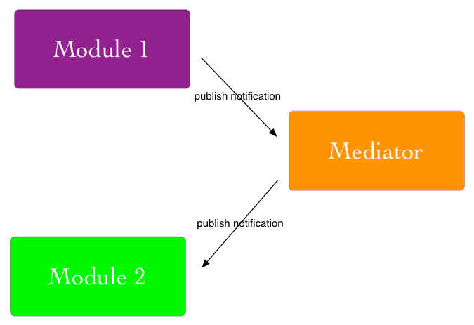
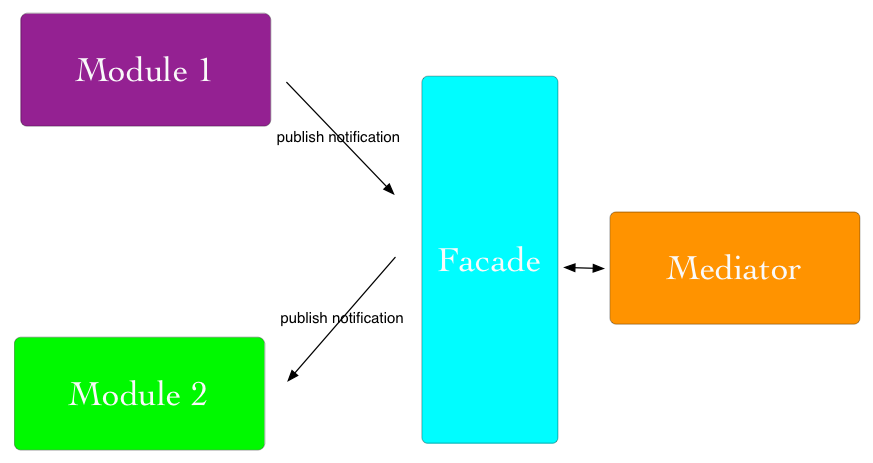

Modularity Matters
Why?
separation of concerns
maintainability
reuse
flexible composition
testability
reduce complexity
namespacing
Patterns
Object Literals
var mathModule = {
_sum: function(input) {
var result = 0;
for(var i = 0; i < input.length; i++){
result += input[i];
}
return result;
},
add: function(x, y){
return _sum([x, y]);
},
pi: 3.14159265359
}
Module Pattern
var mathModule = function () {
// private
var sum = function(input){
var result = 0;
for(var i = 0; i < input.length; i++){
result += input[i];
}
return result;
}
return {
// public
pi: 3.14159265359,
add: function (x, y) {
return sum([x, y]);
}
};
}();
Immediately-Invoked Function Expressions
Module Pattern (Alternate)
var mathModule = (function() {
var myPrivateConstant = 42;
function sum(input) {
// private function ...
}
this.pi = 3.14159265359;
this.add = function(x,y) {
sum([x, y]);
}
return this;
})();
Revealing Module Pattern
var mathModule = function () {
var pi = 3.14159265359;
var sum = function(input){
var result = 0;
for(var i = 0; i < input.length; i++){
result += input[i];
}
return result;
}
var add = function (x, y) {
return sum([x, y]);
}
return {
pi: pi,
add: add
};
}();
Privileged Functions
var mathModule = (function() {
var myPrivateConstant = 42;
function sum(input) {
// private function ...
}
this.getPrivateConstant = function(){
return myPrivateConstant;
}
this.pi = 3.14159265359;
this.add = function(x,y) {
sum([x, y]);
}
return this;
})();
Mediator Pattern
Facade Pattern
Implementations
CommonJS
var module1 = require("module1");
function add () { ... }
exports.add = add;


AMD
Asynchronous Module Definition
RequireJS
require(['module1', 'module1'], function (module1, module2) {
// do something
});
define('myModule', ['module1', 'module2'], function (module1, module2) {
return {
sum: function( x, y ){}
}
});
UMD
Universal Module Definition
(function (root, factory) {
if (typeof define === 'function' && define.amd) {
// AMD. Register as an anonymous module.
define(['exports', 'b'], factory);
} else if (typeof exports === 'object') {
// CommonJS
factory(exports, require('b'));
} else {
// Browser globals
factory((root.commonJsStrict = {}), root.b);
}
}(this, function (exports, b) {
//use b in some fashion.
// attach properties to the exports object to define
// the exported module properties.
exports.action = function () {};
}));
Fragmentation!
The Future
ES6 Modules
module 'math' {
export function add(x, y) {
return x + y;
}
export var pi = 3.14159265359;
}
import {add, pi} from 'math';
add(pi, 5)
module Math from 'math'; Math.add(Math.pi,5)